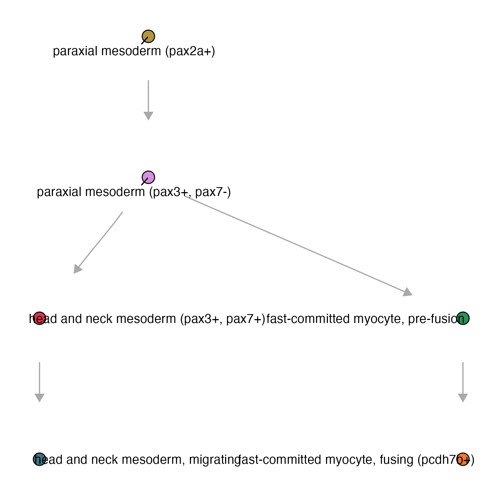
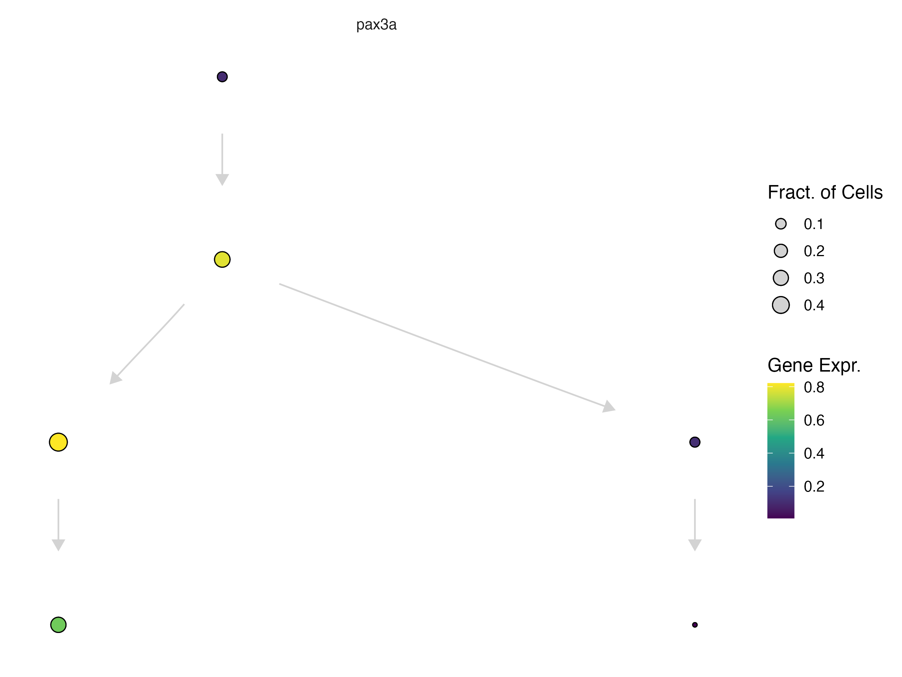
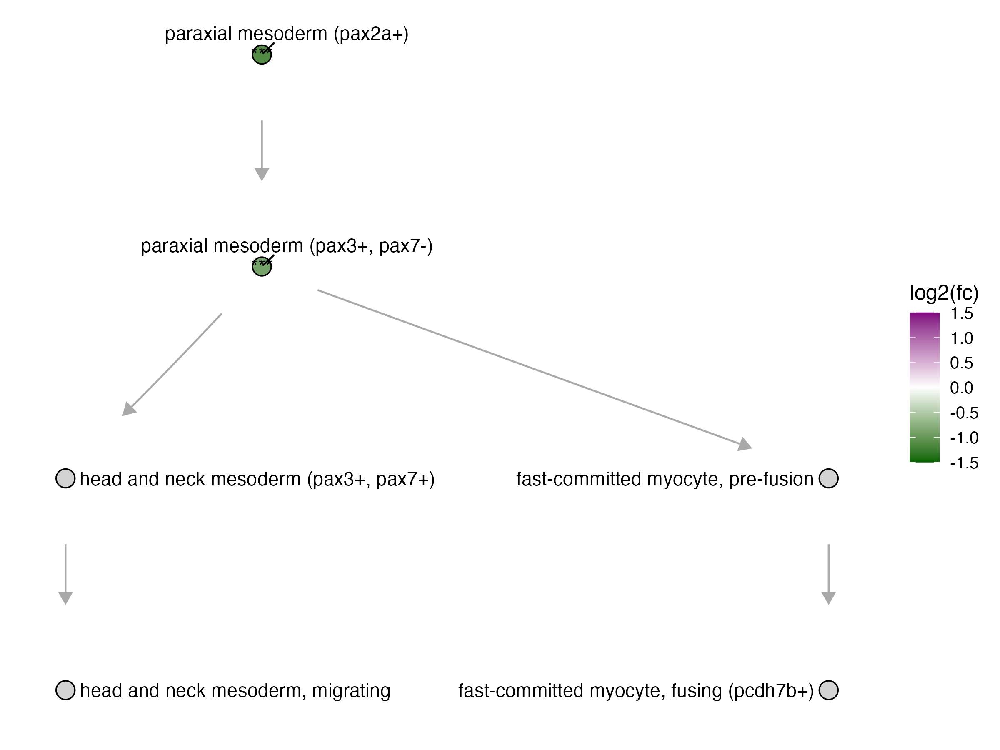
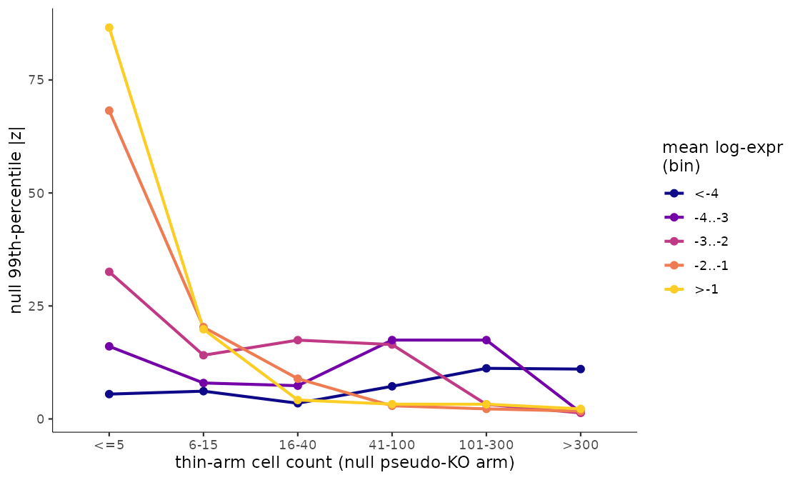
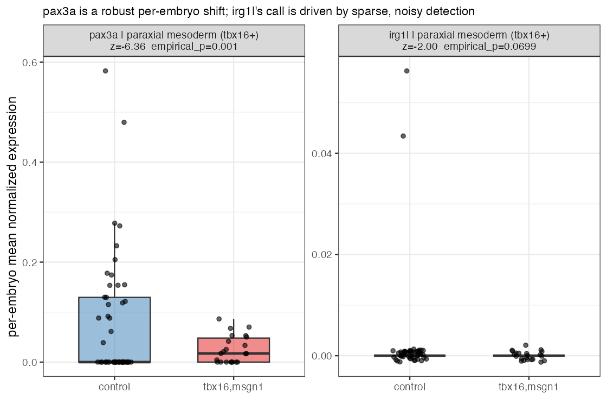
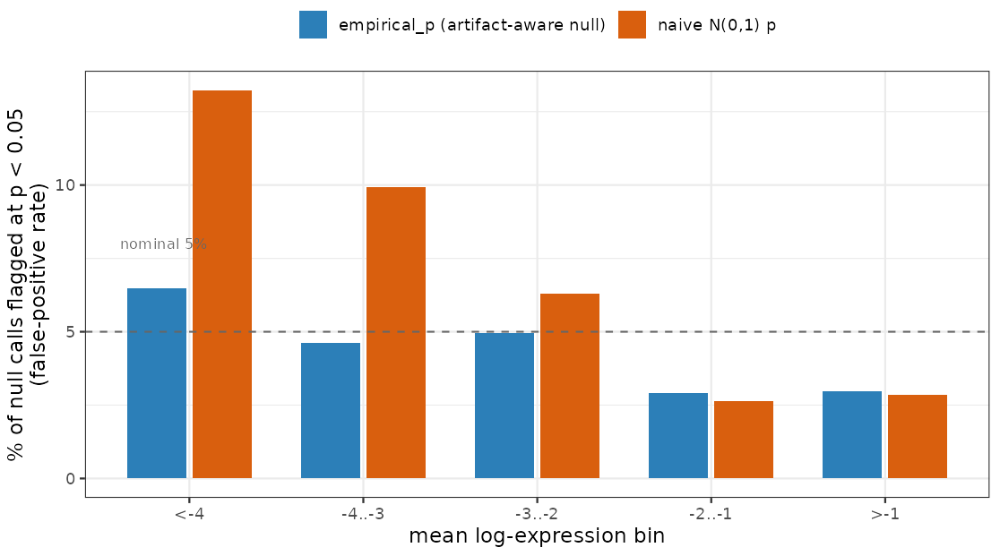

Perturbation DEGs in Platt
Running DEGs within each perturbation
The function compare_genes_within_state_graph():
ccs- a Hookecell_count_setobjectperturbation_col- column name of the perturbationscontrol_ids- list of control idscell_groups- subset of cell groups to run DEGs onperturbations- defaults to perturbationcores- number of cores to use for parallel processing
Within each cell type, this fits a perturbation-vs-control contrast per gene and calls it using the same three thresholds as the Reference DEGs side: log_fc_thresh (default 1), abs_expr_thresh (default 1e-3), and sig_thresh (default 0.05) — but there, they classify a gene's pattern across the graph; here, they decide whether a single perturbation-vs-control contrast counts as a call.
For this example we will be using a subset of the skeletal muscle, for which we have 510,093 reference cells:
plot_annotations(muscle_state_graph, plot_labels = T, node_size = 4)

genes_within_cell_state = compare_genes_within_state_graph(ccs,
perturbation_col = "gene_target",
control_ids = c("ctrl-inj"),
perturbations = c("tbx16", "tbx16-msgn1", "tbx16-tbx16l"),
cores = 6)
genes_within_cell_state %>% head()
| cell_group | genes_within_cell_group |
|---|---|
| paraxial mesoderm (tbx16+) | <tibble [13,322 × 40]> |
| paraxial mesoderm (pax3+, pax7-) | <tibble [9,150 × 40]> |
| fast-committed myocyte, pre-fusion | <tibble [7,051 × 40]> |
| fast-committed myocyte, fusing (pcdh7b+) | <tibble [9,436 × 40]> |
| head and neck mesoderm (pax3+, pax7+) | <tibble [5,202 × 40]> |
| head and neck mesoderm, migrating | <tibble [10,447 × 40]> |
Row counts differ per cell type because they reflect the number of genes admitted for that cell state (after expression filtering), not a fixed panel size. The table now also carries the empirical-FDR columns described below, alongside the original per-contrast statistics — hence the wider 40-column tibble.
The results are nested two levels deep: genes_within_cell_group (one row per cell type, unnested first below) resolves to one row per term — term names which of the perturbations above ("tbx16", "tbx16-msgn1", "tbx16-tbx16l") that row's contrast is for — and each term row carries its own nested perturb_effects tibble with the per-gene statistics for that contrast, unnested second below. To look at a specific knockout term, you can unnest the dataframe and filter:
genes_within_cell_state = genes_within_cell_state %>% tidyr::unnest(genes_within_cell_group)
genes_within_cell_state %>% filter(term == "tbx16,msgn1") %>% tidyr::unnest(perturb_effects)
| term | cell_group | id | gene_short_name | perturb_to_ctrl_shrunken_lfc | empirical_p | empirical_fdr |
|---|---|---|---|---|---|---|
| tbx16,msgn1 | paraxial mesoderm (tbx16+) | ENSDARG00000000189 | sema6e | -0.514 | 0.001 | 0.053 |
| tbx16,msgn1 | paraxial mesoderm (tbx16+) | ENSDARG00000007369 | tcf7l1b | -0.283 | 0.015 | 0.135 |
| tbx16,msgn1 | paraxial mesoderm (tbx16+) | ENSDARG00000026845 | rhoaa | -0.316 | 0.065 | 0.451 |
| tbx16,msgn1 | paraxial mesoderm (tbx16+) | ENSDARG00000078748 | si:ch211-137a8.4 | -0.372 | 0.128 | 0.608 |
| tbx16,msgn1 | paraxial mesoderm (tbx16+) | ENSDARG00000062646 | tet3 | -0.200 | 0.183 | 0.608 |
| tbx16,msgn1 | paraxial mesoderm (tbx16+) | ENSDARG00000060002 | ogg1 | 0.304 | 0.327 | 0.608 |
(chosen to show a spread across empirical_p, rather than the literal first rows in file order; showing a subset of columns — the full table also carries mean_log_sf, ctrl_log_sf, detected_genes, ctrl_detected_genes, perturb_to_ctrl_raw_lfc, perturb_to_ctrl_p_value, log_mean_expression, effect_skew, coefficient_mode, and the arm-support columns discussed below)
perturb_to_ctrl_shrunken_lfc is an empirical-Bayes-shrunken version of the raw log-fold-change (perturb_to_ctrl_raw_lfc) — genes with noisy or low-confidence estimates get pulled toward zero, so a large shrunken LFC is a more trustworthy signal than the same-sized raw LFC would be. It's the fold-change plot_degs() colors nodes by, below, and what the empirical-FDR model (further down this page) is calibrated against.
Pax3a is a MLP gene observed in paraxial mesoderm progenitors as they commit to either head and neck mesoderm or fast muscle fates.
plot_gene_expression(muscle_state_graph, genes = c("pax3a"), node_size = 4, plot_labels = F) +
theme(legend.position = "right")

In the tbx16-msgn1 crispants, all of which fail to generate skeletal muscle properly, pax3a, a key regulator of myogenesis was differentially expressed in myogenic progenitors.
| term | cell_group | gene_short_name | perturb_to_ctrl_shrunken_lfc | perturb_to_ctrl_p_value | empirical_fdr |
|---|---|---|---|---|---|
| tbx16,msgn1 | paraxial mesoderm (tbx16+) | pax3a | -1.1899 | 6.84e-09 | 0.053 |
| tbx16,msgn1 | paraxial mesoderm (pax3+, pax7-) | pax3a | -0.7007 | 4.62e-04 | 0.191 |
... we can plot the DEG fold change of pax3a in the tbx16-msgn1 mutant on the platt graph:
plot_degs(muscle_state_graph, tbx16_degs %>%
filter(term == "tbx16,msgn1", gene_short_name == "pax3a"), node_size = 4.5)

For more information about plotting on a Platt graph, see our plotting page.
For the reference (wild-type) side of DEG calling — pattern classification over the graph, terminal-selector/MLP genes — see our Reference DEGs page.
Filtering artifact calls with empirical FDR
Most of our perturbation screens are control-heavy: many more control embryos than knockout embryos per gene target. That asymmetry has a side effect on perturb_to_ctrl_p_value — for a lowly-expressed gene, the deep control arm can detect a transcript that the thin perturbation arm simply misses by chance, which the model reads as a significant "down" call. It looks exactly like a real loss of expression, but it's a sampling artifact of how much data each arm has, not biology.
Diagnosing this under the null (no real perturbation effect) shows the artifact tracks contrast imbalance, not low expression on its own — it's specifically low-expression genes combined with a control-heavy design that inflate the false "down" call rate:

Figure: the artifact tracks arm thinness, not expression level. Under a control-split null (no real perturbation effect), the 99th-percentile of |z| is plotted against how many cells the pseudo-knockout arm has, split by mean expression bin. When the arm is thin (<=5 cells), the higher-expression bins (orange, yellow) show wildly inflated null tails, while the lowest-expression bin (<-4, dark blue) stays flat and low across every arm size. If the artifact were simply about low expression, that dark blue line would be the one spiking — instead it's the flattest of all. The inflation is a sampling artifact of how few cells define the arm, not a consequence of how lowly a gene is expressed.
annotate_empirical_fdr() estimates how often that artifact happens and decorates a within-state DEG table with the answer, without needing to refit or permute anything:
deg_tbl- a within-state DEG table (needscell_group,log_mean_expression,perturb_to_ctrl_p_value,perturb_to_ctrl_shrunken_lfc)abundances- optional per-cell-type cell counts to stratify the null; falls back to a depth proxy frommean_log_sfif omittedunaffected_cell_types- optional list of cell types known to have no real perturbation effect, used to estimate the artifact rate; if omitted, the least-called cell types in each abundance stratum are used insteadsig_thresh- significance threshold defining a "call" (default0.05)
The idea: within each (cell type x expression x direction) stratum, the rate of "down" calls in cell types that shouldn't be affected by the perturbation at all is the artifact rate. Comparing that self-null rate against the observed call rate in a cell type you do care about gives empirical_fdr — the estimated fraction of calls in that stratum that are artifacts rather than real biology:
genes_within_cell_state = annotate_empirical_fdr(genes_within_cell_state)
Note: this simpler, self-contained version only returns the rate-based empirical_fdr — no per-gene empirical_p. The DEG tables above already carry a richer empirical_p (alongside empirical_fdr) computed by the pipeline's fuller, arm-size-conditioned model — see Training the full empirical-FDR model below.
In practice, empirical_p is what you should filter on. It's built to be a drop-in, artifact-aware replacement for perturb_to_ctrl_p_value: empirical_p = max(p_ashr, p_tail), so it can only push a call's significance down, never up — a call that's real by both the ordinary test and the artifact-null stays significant, while a call that only looks significant because of the low-expression/control-heavy artifact gets demoted back above the threshold. Compare the two pax3a calls from the table above against a borderline, low-expression call in the same cell type:
| gene_short_name | cell_group | log_mean_expression | perturb_to_ctrl_shrunken_lfc | perturb_to_ctrl_p_value | empirical_p | empirical_fdr |
|---|---|---|---|---|---|---|
| pax3a | paraxial mesoderm (tbx16+) | -1.88 | -1.190 | 6.8e-09 | 0.001 | 0.053 |
| irg1l | paraxial mesoderm (tbx16+) | -5.20 | -1.785 | 0.049 | 0.070 | 0.363 |
Both are called "down" at the ordinary perturb_to_ctrl_p_value < 0.05, and irg1l's fold change even looks bigger — but it's a much more lowly-expressed gene sitting right at the significance cutoff. Once the artifact-aware test demotes it, empirical_p rises to 0.070 — no longer significant at 0.05 — while pax3a stays at empirical_p = 0.001, comfortably real. In practice, you'd filter on empirical_p (e.g. dplyr::filter(empirical_p < 0.05)) in place of perturb_to_ctrl_p_value, alongside your usual fold-change threshold.
The per-embryo data behind these two calls makes the difference obvious: pax3a is down across most embryos, a broad and consistent shift, while irg1l sits at essentially zero in nearly every embryo in both groups — the "significant" naive call is being driven by two control embryos that just happen to detect it at all. That's the on-in-control artifact from the mechanism figure above, made concrete:

What empirical_fdr means here is a different thing from empirical_p, and worth being precise about since the column name is reused for two different computations on this page: for annotate_empirical_fdr() above, empirical_fdr was the raw rate-based quantity (null-stratum call rate ÷ observed call rate). Here, in the model-based tables, empirical_fdr is not a BH adjustment of the already-combined empirical_p — the per-gene maximum floors every gene's combined p near the permutation resolution, which compresses the p-distribution so badly that BH would crush even genuine hits. Instead, p_ashr and p_tail are each BH-adjusted separately within cell_group, and the max of the two resulting q-values is taken: empirical_fdr = max(BH(p_ashr), BH(p_tail)). A gene must still clear both criteria at the FDR level — the intersection of the two FDR-controlled call sets — but the ordinary-significance q, which is genuinely small for real hits, is no longer discarded by an up-front per-gene maximum. So empirical_p < 0.05 asks "is this one gene's call real, artifact-adjusted?", while empirical_fdr < 0.1 asks "if I call every gene in this cell type below this threshold, what fraction of that whole called set is expected to be false?" — the standard per-gene-test vs. whole-list-error-rate distinction. pax3a's empirical_fdr = 0.053 says: among all genes called at that same stringency in that cell type, ~5% are expected to be false — reassuring at the list level, not just the single-gene level.
The correction is worth trusting because it's calibrated: held out against a control-split null (no real perturbation effect), the ordinary p-value's false-positive rate balloons at low expression, while empirical_p stays close to the nominal 5% across the board.

Figure: empirical_p restores nominal calibration; the naive test doesn't. Held out against a control-split null (log-ratio = -2.48, the most control-heavy grid point), the naive N(0,1) p-value's false-positive rate at p < 0.05 (orange) balloons well past the nominal 5% line at low expression — over 13% in the most lowly-expressed bin. empirical_p (blue) stays close to the nominal 5% across every expression bin, including the ones where the naive test breaks down.
Training the full empirical-FDR model
empirical_p comes from a fuller model than annotate_empirical_fdr() runs — one that's trained from your own experiment's control cells rather than assumed. It's a four-step pipeline:
1. Arm support — how many replicate embryos and cells each cell type actually has on the perturbation side, which sets the honest degrees-of-freedom for the contrast:
support = efdr_perturbation_support(tbx16_msgn1_cds,
sample_group = "embryo",
cell_group = "cell_type",
control_ids = c("ctrl-inj"),
perturbation_col = "gene_target")
2. Build the null — relabel control embryos as a pseudo-perturbation at several split sizes, and run the same within-state DEG contrast on them. Since there's no real effect in a control-vs-control split, whatever "significant" calls fall out are exactly the artifact you're trying to model:
ctrl_only_cds = tbx16_msgn1_cds[, colData(tbx16_msgn1_cds)$gene_target %in% c("ctrl-inj")]
null_draws = build_empirical_null(ctrl_only_cds,
sample_group = "embryo",
cell_group = "cell_type",
control_ids = c("ctrl-inj"),
perturbation_col = "gene_target",
cores = 6)
3. Train the model — fit the null tail of |z| as a surface over expression and thin-arm cell count:
efdr_model = train_efdr_model(null_draws)
4. Annotate your real DEG table — apply the trained model, along with the arm support from step 1, to get empirical_p/empirical_fdr:
genes_within_cell_state = annotate_empirical_fdr_model(
model = efdr_model,
deg_tbl = genes_within_cell_state,
support = support,
arm_cells = support
)
This is the same computation that produces the empirical_p/empirical_fdr columns already sitting in the pipeline-computed tables shown throughout this page — running it yourself only matters if you're annotating a DEG table computed outside the standard pipeline.
A documentation gap worth knowing about: build_empirical_null()'s documented return columns (cell_group, log_mean_expression, z, log_ratio) don't list n_pert_cells, even though train_efdr_model()'s own docs say its null input needs one. If you hit a missing-column error wiring these two together, that's why — check the current source rather than assuming the docs above are complete.
For the full argument list of each of these functions, see their reference pages: efdr_perturbation_support(), build_empirical_null(), train_efdr_model(), and annotate_empirical_fdr_model().
Next: see Phenotyping to turn these per-gene DEG calls into cell-state-level phenotype summaries.